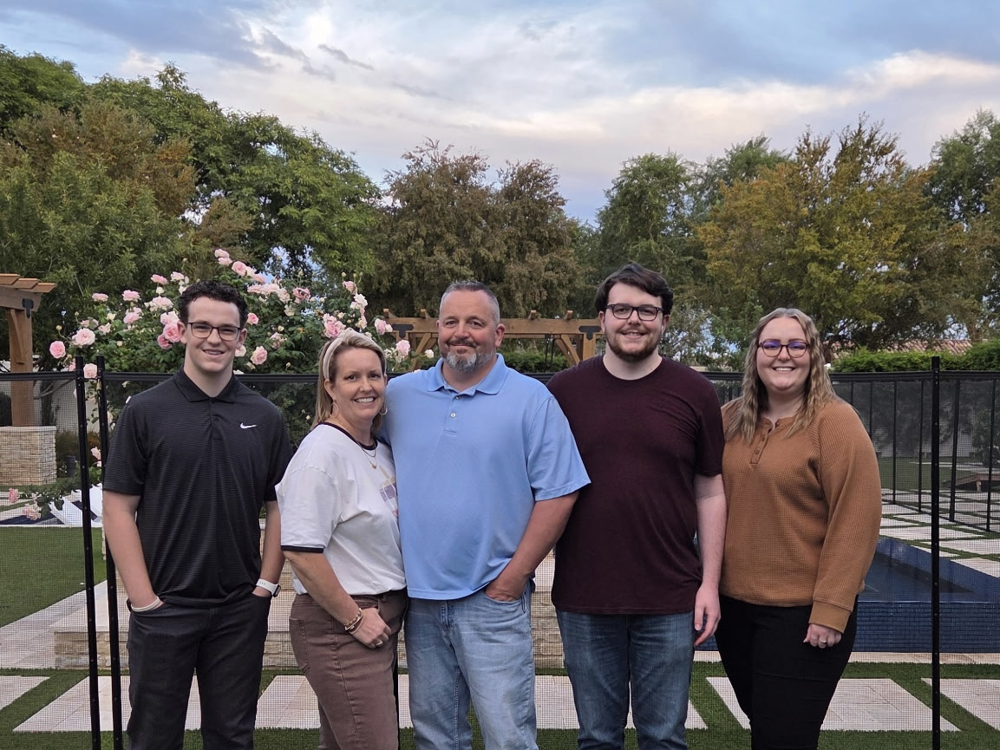

Brayden Pace
I am a disciple of Jesus Christ, an entrepreneur, and a student who is passionate about learning and growth. I strive to live with purpose, strengthen my faith, and make a positive impact in everything I do.
Learn More About Me
My Family
I am the youngest in a family of five, and my family means everything to me. I look up to my parents and older siblings, who have always taken great care of me and taught me so much. They’ve played a huge role in shaping who I am today. Some of my favorite things to do are traveling, going out to eat, watching movies, and simply spending quality time with my family.
My Testimony
Jesus Christ means everything to me, and being His disciple is my highest priority. Following Him has brought a deep and lasting joy into my life that I can’t find anywhere else. As I strive to serve as He served, I’ve come to feel a small glimpse of the love He has for each of His children, and it has changed the way I see others. I had the incredible opportunity to serve a two-year mission in the Brazil Santos Mission, and it was one of the most meaningful experiences of my life. The people I met, the lessons I learned, and the growth I experienced are things I will carry with me forever. I truly wouldn’t trade those experiences for anything.
My Hobbies
I enjoy traveling, hiking, and playing sports. I have a strong interest in entrepreneurship and love learning about business and new opportunities. I also enjoy studying the gospel and continuing to strengthen my faith. Most of all, I value spending time with my loved ones and creating meaningful memories with them whenever I can.